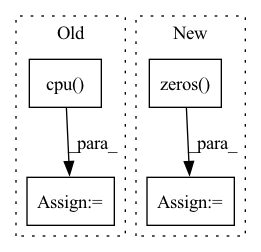

Pattern ID :10350
Before Change
module.bias.data.fill_(0.0)
def forward(self, user, item):
user = torch.from_numpy(self.interaction_matrix[user.cpu() ].todense()).to(self.device)
item = torch.from_numpy(self.interaction_matrix[:, item.cpu()].todense()).to(self.device).t()
user = self.user_linear(user)
item = self.item_linear(item)
user = self.user_fc_layers(user)
item = self.item_fc_layers(item)
vector = torch.cosine_similarity(user, item).view(-1)
vector = torch.max(vector, torch.tensor([self.min_y_hat]).to(self.device))
return vector
After Change
// Following lines construct tensor of shape [B,n_users] using the tensor of shape [B,H]
col_indices = self.history_user_id[item].flatten()
row_indices = torch.arange(item.shape[0]).to(self.device).repeat_interleave(self.history_user_id.shape[1], dim=0)
matrix_01 = torch.zeros( 1) .to(self.device).repeat(item.shape[0], self.n_users)
matrix_01.index_put_((row_indices, col_indices), self.history_user_value[item].flatten())
item = self.item_linear(matrix_01)
user = self.user_fc_layers(user)
item = self.item_fc_layers(item)
user = F.normalize(user, p=2, dim=1) // after normalize the vector, cosine distance reduced to dot product.
item = F.normalize(item, p=2, dim=1)
vector = torch.mul(user, item).sum(dim=1)
vector = torch.max(vector, self.min_y_hat) // restrict the result to [0, 1].
return vectorIn pattern: SUPERPATTERN
Frequency: 3
Non-data size: 4
Instances Fragment ID: 36315738
Project Name: rucaibox/recbole
Commit Name: a63051c31f6cacc489710809995b2610a52b96d6
Time: 2020-09-17
Author: 893833413@qq.com
File Name: recbox/model/general_recommender/dmf.py
M Class Name: DMF
N Class Name: DMF
M Method Name: forward(3)
N Method Name: forward(3)
M Parent Class: GeneralRecommender
N Parent Class: GeneralRecommender
M File Name: recbox/model/general_recommender/dmf.py
N File Name: recbox/model/general_recommender/dmf.py
M Start Line: 73
M End Line: 82
N Start Line: 90
N End Line: 106
Before Change
gradient.index_select(1, torch.LongTensor([2]).cuda()) / (0.2010))
img_new = torch.add(img_.data, -eps, gradient)
output_new = model(img_new, w_test, fac).cpu() .detach().numpy()
outputs[_, index] = np.concatenate([output_new, label], axis=1)
if with_acc:After Change
label = label.numpy().reshape(-1, 1)
img_ = img.cuda()
img_.requires_grad = True
output = model(img_, torch.zeros( [img.shape[0], 400]) )
output = output / T
pseudo_label = output.argmax(-1).cuda() Fragment ID: 36315736
Project Name: sungbinlim/neuboots
Commit Name: 482452e39a21d91892b4d24c84ef16529d0e0de0
Time: 2020-09-30
Author: phelahab@gmail.com
File Name: utils/jupyter.py
M Class Name: AnonimousClass
N Class Name: AnonimousClass
M Method Name: odin_infer(8)
N Method Name: odin_infer(9)
M Parent Class:
N Parent Class:
M File Name: utils/jupyter.py
N File Name: utils/jupyter.py
M Start Line: 118
M End Line: 156
N Start Line: 179
N End Line: 208
Before Change
return self.forward(user, item)
def get_user_embedding(self, user):
user = torch.from_numpy(self.interaction_matrix[user.cpu() ].todense()).to(self.device)
user = self.user_linear(user)
user = self.user_fc_layers(user)
return user
def get_item_embedding(self):After Change
col_indices = self.history_item_id[user].flatten()
row_indices = torch.arange(user.shape[0]).to(self.device).repeat_interleave(self.history_item_id.shape[1],
dim=0)
matrix_01 = torch.zeros( 1) .to(self.device).repeat(user.shape[0], self.n_items)
matrix_01.index_put_((row_indices, col_indices), self.history_item_value[user].flatten())
user = self.user_linear(matrix_01)
Fragment ID: 36315744
Project Name: rucaibox/recbole
Commit Name: a63051c31f6cacc489710809995b2610a52b96d6
Time: 2020-09-17
Author: 893833413@qq.com
File Name: recbox/model/general_recommender/dmf.py
M Class Name: DMF
N Class Name: DMF
M Method Name: get_user_embedding(2)
N Method Name: get_user_embedding(2)
M Parent Class: GeneralRecommender
N Parent Class: GeneralRecommender
M File Name: recbox/model/general_recommender/dmf.py
N File Name: recbox/model/general_recommender/dmf.py
M Start Line: 107
M End Line: 109
N Start Line: 141
N End Line: 146